<title>Squad Toolkit Tests</title>
<meta name="claude:viewport-fit-sides" content="cover">
<link rel="stylesheet" href="https://fonts.googleapis.com/css2?family=IBM+Plex+Sans:wght@400;600&family=IBM+Plex+Mono:wght@400;500&display=swap">
<style>
/* Layout: one column of experiments; each arm is a row, label left and pictures right, stacking on phones */
:root{--bg:#f3f1ec;--fg:#1d1c1a;--muted:#6b665d;--line:#d9d4c8;--accent:#b5541c;--panel:#e9e5dc;
--sans:"IBM Plex Sans",system-ui,sans-serif;--mono:"IBM Plex Mono",ui-monospace,monospace}
@media (prefers-color-scheme:dark){:root:not([data-theme="light"]){--bg:#14161a;--fg:#e6e2da;--muted:#9a958b;--line:#2c3036;--accent:#e8954f;--panel:#1c1f24;color-scheme:dark}}
:root[data-theme="dark"]{--bg:#14161a;--fg:#e6e2da;--muted:#9a958b;--line:#2c3036;--accent:#e8954f;--panel:#1c1f24;color-scheme:dark}
body{background:var(--bg);color:var(--fg);font:15px/1.55 var(--sans);padding-left:max(16px,env(safe-area-inset-left,0px));padding-right:max(16px,env(safe-area-inset-right,0px));padding-block:28px 48px}
main{max-width:1080px;margin:0 auto;display:grid;gap:40px}
h1{font-size:1.7rem;margin:0;text-wrap:balance} h2{font-size:1.15rem;margin:0 0 4px;text-wrap:balance}
.lede{max-width:68ch;color:var(--muted);margin:6px 0 0}
.sub{color:var(--muted);margin:0 0 14px;max-width:68ch}
section{border-top:1px solid var(--line);padding-top:20px}
.arm{display:grid;grid-template-columns:200px 1fr;gap:14px;align-items:start;margin-bottom:14px}
.lab{display:grid;gap:2px;min-width:0} .num{font:500 1rem var(--mono);color:var(--accent);font-variant-numeric:tabular-nums} .what{font-size:.8rem;color:var(--muted)}
.strip{display:flex;gap:8px;flex-wrap:wrap;min-width:0}
figure{margin:0;flex:1 1 180px;max-width:260px} figure img{width:100%;display:block;border-radius:3px;image-rendering:pixelated}
figcaption{font:.75rem var(--mono);color:var(--muted)}
.verdict{background:var(--panel);padding:10px 12px;border-radius:4px;max-width:80ch;margin:6px 0 0}
.key{font-size:.85rem;color:var(--muted);max-width:75ch}
.tw{overflow-x:auto} table{border-collapse:collapse;font-variant-numeric:tabular-nums;font-size:.9rem}
td,th{padding:6px 12px;border-bottom:1px solid var(--line);text-align:left;white-space:nowrap} th{font-weight:600}
tr.best td{color:var(--accent);font-weight:600}
@media (max-width:640px){.arm{grid-template-columns:1fr}}
</style>
<main>
<header><h1>Squad toolkit, first tests</h1>
<p class="lede">Six tools, each built on one part of the mould's model. They run on the CPU race world (512 × 320), seed 1 shown, with the counts as the mean of 8 paired seeds. In each picture a dot is a living walker, and red ground is a crater from the scorch field. The crater fades as its timer runs down. Nothing is drawn on top of the simulation.</p></header>
<section><h2>Blast on the densest mould, 60 s in</h2><p class="sub">Walkers inside the 6-cell disc (mean of 8 seeds): before 369.</p><div class="arm"><div class="lab"><b>No tool</b><span class="num">370 / 370 / 373</span><span class="what">walkers in disc at 2 / 10 / 20 s</span></div><div class="strip"><figure><figcaption>2 s</figcaption></figure><figure>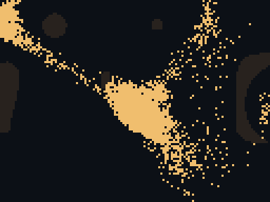<figcaption>10 s</figcaption></figure><figure><figcaption>20 s</figcaption></figure></div></div><div class="arm"><div class="lab"><b>Without crater</b><span class="num">85 / 188 / 235</span><span class="what">walkers in disc at 2 / 10 / 20 s</span></div><div class="strip"><figure>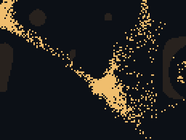<figcaption>2 s</figcaption></figure><figure>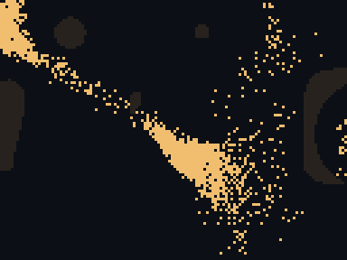<figcaption>10 s</figcaption></figure><figure><figcaption>20 s</figcaption></figure></div></div><div class="arm"><div class="lab"><b>With crater</b><span class="num">67 / 82 / 99</span><span class="what">walkers in disc at 2 / 10 / 20 s</span></div><div class="strip"><figure>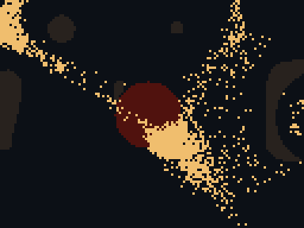<figcaption>2 s</figcaption></figure><figure>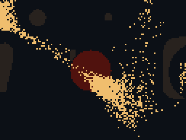<figcaption>10 s</figcaption></figure><figure><figcaption>20 s</figcaption></figure></div></div><p class="verdict">Crater against no crater at 10 s: lower on 8 of 8 seeds (p 0.008).</p></section><section><h2>Four soldiers firing for 20 s, then stopping</h2><p class="sub">Empty cells within 12 dish cells. The last picture is 10 s after the fire stops.</p><div class="arm"><div class="lab"><b>No tool</b><span class="num">945 / 931 / 929</span><span class="what">empty cells at 10 / 20 / 30 s</span></div><div class="strip"><figure>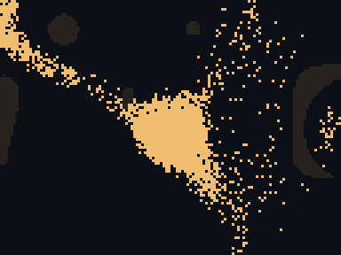<figcaption>10 s</figcaption></figure><figure><figcaption>20 s</figcaption></figure><figure>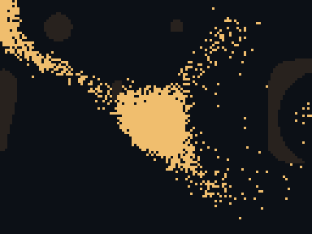<figcaption>30 s</figcaption></figure></div></div><div class="arm"><div class="lab"><b>Plain fire</b><span class="num">1026 / 1037 / 966</span><span class="what">empty cells at 10 / 20 / 30 s</span></div><div class="strip"><figure><figcaption>10 s</figcaption></figure><figure><figcaption>20 s</figcaption></figure><figure><figcaption>30 s</figcaption></figure></div></div><div class="arm"><div class="lab"><b>With crater</b><span class="num">1080 / 1174 / 1059</span><span class="what">empty cells at 10 / 20 / 30 s</span></div><div class="strip"><figure>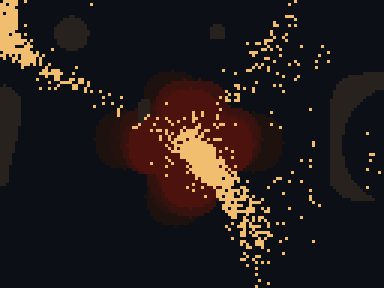<figcaption>10 s</figcaption></figure><figure>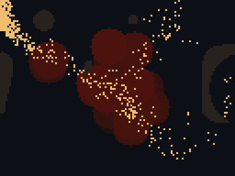<figcaption>20 s</figcaption></figure><figure><figcaption>30 s</figcaption></figure></div></div><p class="verdict">A crater at every hit against plain fire at 20 s: higher on 6 of 8, lower on 1 (p 0.125, not significant).</p></section><section><h2>Det cord across an arm</h2><p class="sub">Trail summed on the cut's cells. Before: 123.</p><div class="arm"><div class="lab"><b>No tool</b><span class="num">125 / 122 / 124</span><span class="what">trail on the cut at 2 / 10 / 30 s</span></div><div class="strip"><figure><figcaption>2 s</figcaption></figure><figure><figcaption>10 s</figcaption></figure><figure><figcaption>30 s</figcaption></figure></div></div><div class="arm"><div class="lab"><b>Without crater</b><span class="num">108 / 144 / 150</span><span class="what">trail on the cut at 2 / 10 / 30 s</span></div><div class="strip"><figure><figcaption>2 s</figcaption></figure><figure><figcaption>10 s</figcaption></figure><figure><figcaption>30 s</figcaption></figure></div></div><div class="arm"><div class="lab"><b>With crater</b><span class="num">9 / 13 / 138</span><span class="what">trail on the cut at 2 / 10 / 30 s</span></div><div class="strip"><figure>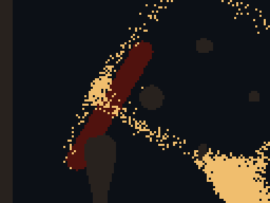<figcaption>2 s</figcaption></figure><figure>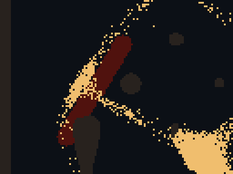<figcaption>10 s</figcaption></figure><figure><figcaption>30 s</figcaption></figure></div></div><p class="verdict">Crater against no crater at 10 s: lower on 8 of 8 (p 0.008). The crater fades by about 15 s. Nothing beyond the cut starves yet, because food does not flow through the mould.</p></section><section><h2>Sleep gas on the densest mould</h2><p class="sub">Walkers asleep, and crystal charge eaten in 20 s.</p><div class="arm"><div class="lab"><b>No tool</b><span class="num">0 asleep; 1,090 eaten</span><span class="what"></span></div><div class="strip"><figure>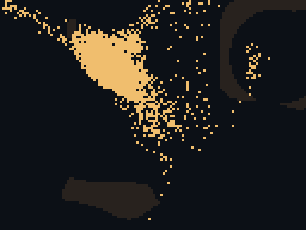<figcaption>10 s</figcaption></figure><figure><figcaption>20 s</figcaption></figure></div></div><div class="arm"><div class="lab"><b>Gas</b><span class="num">812 asleep; 1 eaten</span><span class="what"></span></div><div class="strip"><figure><figcaption>10 s</figcaption></figure><figure><figcaption>20 s</figcaption></figure></div></div><div class="arm"><div class="lab"><b>Gas, then a blast nearby</b><span class="num">188 asleep at 10 s; 660 eaten</span><span class="what"></span></div><div class="strip"><figure>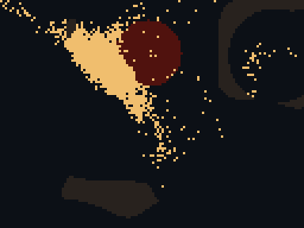<figcaption>10 s</figcaption></figure><figure>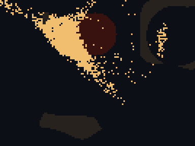<figcaption>20 s</figcaption></figure></div></div><p class="verdict">A blast 10 cells away at 5 s wakes three quarters of the sleepers: lower on 8 of 8 (p 0.008).</p></section><section><h2>Germ on the densest mould (the whole world)</h2><p class="sub">Living walkers. Before: 2,652.</p><div class="arm"><div class="lab"><b>No tool</b><span class="num">2,986 / 3,625 / 4,493</span><span class="what">living at 10 / 30 / 60 s</span></div><div class="strip"><figure>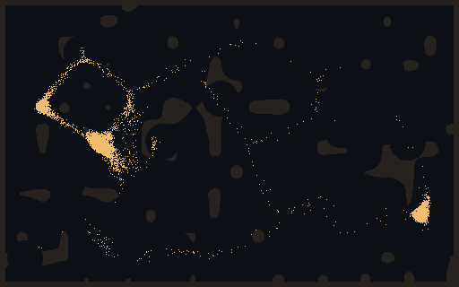<figcaption>10 s</figcaption></figure><figure>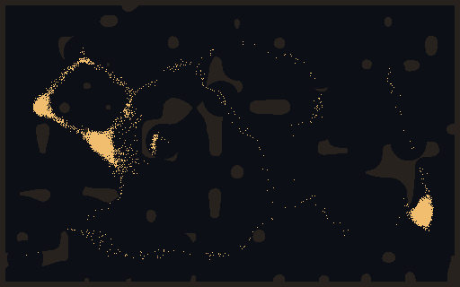<figcaption>30 s</figcaption></figure><figure>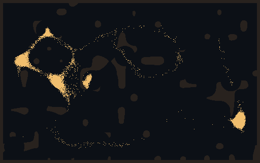<figcaption>60 s</figcaption></figure></div></div><div class="arm"><div class="lab"><b>Germ, steering only</b><span class="num">2,977 / 3,590 / 4,441</span><span class="what">living at 10 / 30 / 60 s</span></div><div class="strip"><figure><figcaption>10 s</figcaption></figure><figure><figcaption>30 s</figcaption></figure><figure>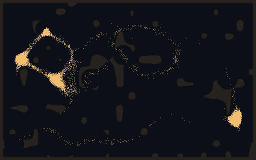<figcaption>60 s</figcaption></figure></div></div><div class="arm"><div class="lab"><b>Germ that burns energy</b><span class="num">867 / 796 / 939</span><span class="what">living at 10 / 30 / 60 s</span></div><div class="strip"><figure>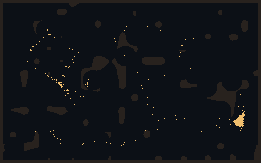<figcaption>10 s</figcaption></figure><figure>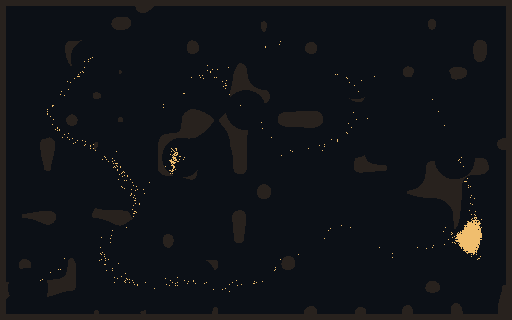<figcaption>30 s</figcaption></figure><figure>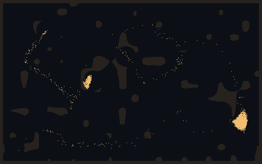<figcaption>60 s</figcaption></figure></div></div><p class="verdict">Germ against none and against steering-only at 30 s: lower on 8 of 8 (p 0.008 each).</p></section>
<section><h2>The four plans against each mould</h2><p class="sub">Mean score over 8 seeds, cap 600 s (higher is better for the squad; above 1 means the mould was wiped). In brackets: mould wiped / time cap / squad wiped.</p>
<div class="tw"><table><thead><tr><th>Hand</th><th>Plain</th><th>Swarmer</th><th>Sleeper</th><th>Sporer</th></tr></thead><tbody>
<tr><td>idle</td><td>−0.69 (0/5/3)</td><td>−0.52 (0/6/2)</td><td>−0.23 (0/8/0)</td><td>−0.83 (0/4/4)</td></tr>
<tr><td>random</td><td>−1.63 (0/0/8)</td><td>−1.71 (0/0/8)</td><td>−1.67 (0/0/8)</td><td>−1.72 (0/0/8)</td></tr>
<tr><td>random with tools</td><td>−1.54 (0/0/8)</td><td>−1.64 (0/0/8)</td><td>−1.62 (0/0/8)</td><td>−1.63 (0/0/8)</td></tr>
<tr><td>farm</td><td>+0.20</td><td>+0.02 (0/7/1)</td><td>+0.27</td><td>+0.13</td></tr>
<tr class="best"><td>loud (blast, mines, reek)</td><td>+1.76 (8/0/0)</td><td>+1.96 (8/0/0)</td><td>+1.44 (6/2/0)</td><td>+1.18 (6/2/0)</td></tr>
<tr><td>quiet (mask, gas)</td><td>+0.13</td><td>+0.13</td><td>+0.27</td><td>+0.09</td></tr>
<tr><td>plague (germ)</td><td>+0.84 (3/5/0)</td><td>+0.92 (4/4/0)</td><td>+0.47 (0/8/0)</td><td>+0.74 (2/6/0)</td></tr>
<tr><td>siege (det cord)</td><td>+0.20</td><td>+0.00 (0/7/1)</td><td>+0.27</td><td>+0.12</td></tr>
</tbody></table></div>
<p class="verdict">Every plan beats idle and both random hands on 7 or 8 of 8 seeds in every column. The loud plan is the best in all four, so the plans don't yet counter each other. The Sleeper and the Sporer each survive it twice out of 8. The next step is a mould that answers a blast.</p></section>
<p class="key">Source: Reports/squad-toolkit-2026-11-12.md in the repo; examples/kitprobe.rs and examples/kitplans.rs. CPU only; the tools reach the game window after the bursts port.</p>
</main>